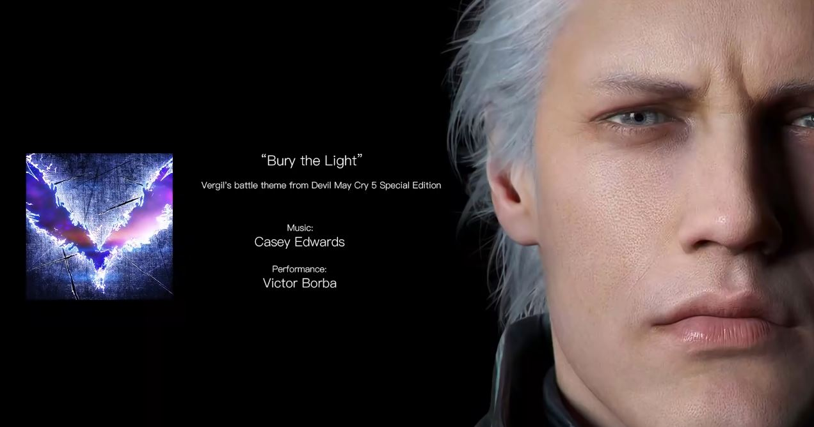
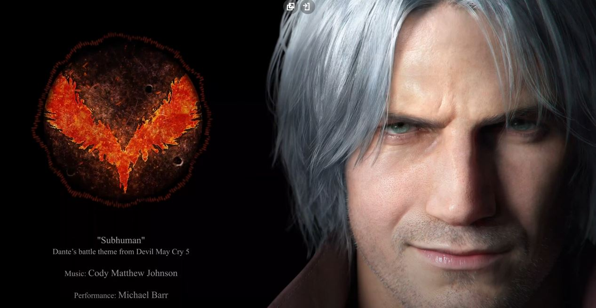
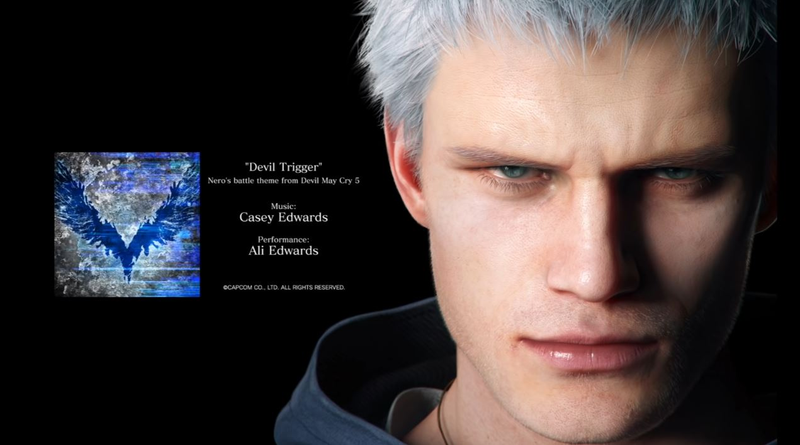

<body background="back.jpg"></body>
    <marquee><font size="20" color=white >Najbardziej udane gry gatunku Spectacle Fighter  </font></marquee>
    
    <br>
    <center>
    </center>
        <br>
    <center>
    <meta http-equiv="Content-Type" content="text/html; charset=utf-8" />
        
    </nav>
        </fieldset>
        <br>
    <br>
  
    <hr color=red>

    <center>
        
<b><font size="50" color=white>Panel wyboru strony </font></b>
        <fieldset style="width:500px">
        
        <center>
            <nav>
                
                <button type="button"> <a style="word-spacing: 0cm" ;="" href="dmc.html">Devil May Cry</a></button>
                <button type="button"> <a href="mgr.html">Metal Gear Rising:REVENGEANCE</a></button>
                <button type="button"><a href="bayo.html">Bayonetta</a></button>
                <button type="button"> <a href="index.html">Strona główna</a></button>
              
        </nav> </fieldset>
        


    
        
    <hr color=red>

        
    <br>
    <fieldset style="background-color:rgba(139, 0, 0, 0.37);">
        <center>
    <b><font size="60" color=white>Devil May Cry</font></b>
    <br>
    <br>
    <center>
    <b><font size="5" color=white>Seria gier komputerowych typu hack and slash, których akcja dzieje się współcześnie, produkowana przez Capcom i stworzona przez Shinji Mikami. Początkowo zamierzona jako sequel w serii Resident Evil, Devil May Cry jest nazywane źródłem podgatunku gier akcji nazwanego Extreme Action. Fabuła serii toczy się wokół celu głównego bohatera, Dantego, którym jest pomszczenie morderstwa matki przez eksterminację demonów. W międzyczasie spotyka swojego dawno zaginionego brata, z którym tworzy niestabilną znajomość. W dalszej części fabuły okazuje się, że władca demonów Mundus jest odpowiedzialny za utratę matki i skorumpowanie brata Dantego. Rozgrywka składa się z ciężkich scen walki, w których gracz musi wykonywać długie ataki unikając odnoszenia obrażeń. Ten element, czas i liczba zdobytych przedmiotów jest używana do wyliczenia wyniku gracza.
    
        </font></b>
    </fieldset>
    </center>


   <br>
   
   <hr color=red>
   <b><font size="70" color=white>Gameplay</font></b>
   <br>
   <iframe style="border: 7px solid rgb(228, 0, 0);" width="560" height="235" src="https://www.youtube.com/embed/i_84BafqQ4I?controls=0" frameborder="0" allowfullscreen></iframe>
   
   <video width="560" height="235" controls>
    <source src="vergil.mp4" type="video/mp4">
    <source src="movie.ogg" type="video/ogg">
  Twoja przeglądarka nie obsługuje tego filmu
  </video>
<br>
  <b><font size="70" color=white>Muzyka</font></b>
  <br>
  <fieldset style="width:1px">


    <link rel="ayaya" href="ayaya.css">


    
    <style>
        body {
          background-color: rgb(0, 0, 0);
        }
        
        h1 {
          color: rgba(255, 255, 255, 0.726);
          
        }
        </style>


<style>
    h1{text-align: center; font-size:300%;}
</style>
    
    <h1 style="text-align:center;">Bury the Light</h1>
   
  <center>
  <audio controls>
    <source src="horse.ogg" type="audio/ogg">
    <source src="vergil.mp3" type="audio/mpeg">
  Twoja przeglądarka nie obsługuje plików mp3
  </audio>
  
  <hr color=white>
  
  
  <h1 style="text-align:center;">Subhuman</h1>
  <center>
  <audio controls>
    <source src="horse.ogg" type="audio/ogg">
    <source src="dante.mp3" type="audio/mpeg">
    Twoja przeglądarka nie obsługuje plików mp3
</audio>
 
  
  <hr color=white>

  
  <h1 style="text-align:center;">Devil Trigger</h1>
  <center>
  <audio controls>
    <source src="horse.ogg" type="audio/ogg">
    <source src="nero.mp3" type="audio/mpeg">
    Twoja przeglądarka nie obsługuje plików mp3
    </audio>
    </div>
  </fieldset>
  <hr color=red>
  <hr color=white>